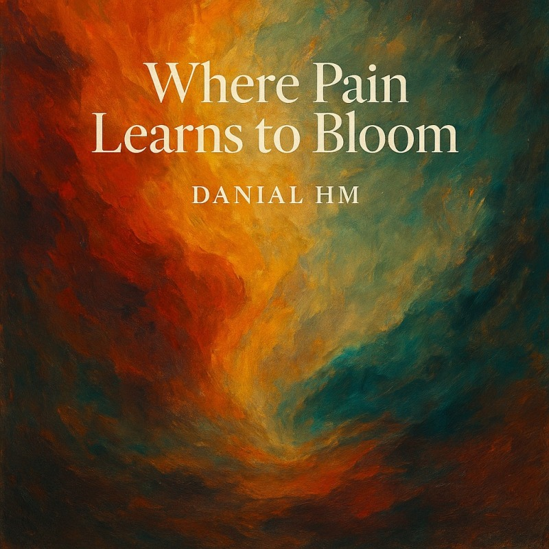

SINGLE
Where Pain Learns to Bloom
A meditation on quiet transformation, treating pain not as the conclusion of a story but as the ground from which renewal may emerge.
“Some wounds become gardens.”
ArtistDanial HM
LabelDanial HM Records
Release dateDecember 26, 2025
UPC199942975894
ISRCQT6FP2559405
FormatSingle